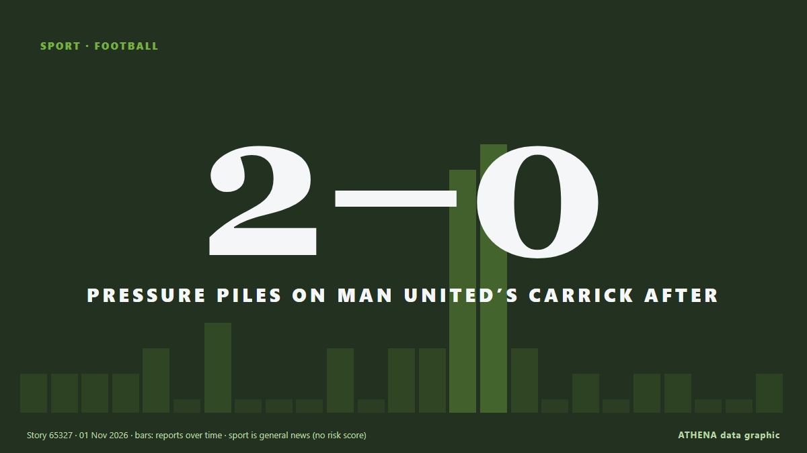

Pressure piles on Man United’s Carrick after 2-0 defeat at Chelsea

The travelling fans applauded Michael Carrick when he strode to the corner of the Shed End at Stamford Bridge to acknowledge them but Manchester United’s former stalwart midfielder and current… من Cyprus Mail
نشرته بشكل مستقل 21 مصدرًا في 16 دولة منذ 30 أكتوبر، وأول من نشره Punch؛ والتغطية تتراجع. تُؤرشف أخبار الرياضة والثقافة دون تقييم للمخاطر. الثقة 91٪ (مرتفعة)، وعدد المصادر المستقلة المؤكِّدة: 21، بمتوسط موثوقية للمصادر يبلغ 73٪. وسائل الإعلام حسب البلد: المملكة المتحدة (20), نيجيريا (5), عُمان (2). التغطية: من 30 أكتوبر إلى 1 نوفمبر، 50 ساعة.
ما الذي تغيّر: 27 تقارير جديدة من 18 غرف أخبار خلال 24 ساعة حتى 1 نوفمبر.
العنوان الأول: What Manchester United's players don't want to happen amid Michael Carrick uncertainty
تُعرض العناوين بالإنجليزية كما نُشرت.
نظرة سريعة
اختير وقُيِّم وكُتب وفق منهجية ATHENA المنشورة. لا يتدخل أي محرر في الأحداث بعينها. كيف يُنتَج ›
| 30 Oct 09:28 UTC | 1 |
|---|---|
| 30 Oct 11:28 UTC | 1 |
| 30 Oct 13:28 UTC | 1 |
| 30 Oct 15:28 UTC | 1 |
| 30 Oct 17:28 UTC | 2 |
| 30 Oct 19:28 UTC | 0 |
| 30 Oct 21:28 UTC | 3 |
| 30 Oct 23:28 UTC | 0 |
| 31 Oct 01:28 UTC | 0 |
| 31 Oct 03:28 UTC | 0 |
| 31 Oct 05:28 UTC | 2 |
| 31 Oct 07:28 UTC | 0 |
| 31 Oct 09:28 UTC | 2 |
| 31 Oct 11:28 UTC | 2 |
| 31 Oct 13:28 UTC | 9 |
| 31 Oct 15:28 UTC | 10 |
| 31 Oct 17:28 UTC | 2 |
| 31 Oct 19:28 UTC | 0 |
| 31 Oct 21:28 UTC | 1 |
| 31 Oct 23:28 UTC | 0 |
| 01 Nov 01:28 UTC | 1 |
| 01 Nov 03:28 UTC | 1 |
| 01 Nov 05:28 UTC | 0 |
| 01 Nov 07:28 UTC | 0 |
| 01 Nov 09:28 UTC | 1 |
لماذا هذه الأرقام
الأهمية
الخطر
الثقة
التغطية — من نشر الخبر ومتى
العنوان كما نُشر · يفتح الأصل- Punch · نيجيرياI need no assurances over Man Utd future — Carrick
- Manchester Evening News · المملكة المتحدةWhat Manchester United's players don't want to happen amid Michael Carrick uncertainty
- Manchester Evening News · المملكة المتحدةCole Palmer to Man United transfer truth after Chelsea 'talks' and Andrey Santos message
- Manchester Evening News · المملكة المتحدة13 players set to miss Chelsea vs Man United as Michael Carrick confirms major injury blow
- The Namibian · ناميبياCarrick fights for Man Utd job, Arsenal face Liverpool test
- Evening Standard (London) · المملكة المتحدةHow Manchester United can stun Chelsea and save Michael Carrick's job
- Belfast Telegraph · المملكة المتحدةMichael Carrick hopes ‘hard truths’ being aired can help Man Utd through crisis
- The Irish News (Belfast) · المملكة المتحدةMichael Carrick hopes ‘hard truths’ being aired can help Man Utd through crisis
- Evening Standard (London) · المملكة المتحدةChelsea: Xabi Alonso issues Cole Palmer challenge amid transfer talks confirmation
- Manchester Evening News · المملكة المتحدةHow Manchester United should line up vs Chelsea in must-win game for Michael Carrick
- Manchester Evening News · المملكة المتحدةMan United stars 'booed' on train to face Chelsea as Michael Carrick feelings clear
- Manchester Evening News · المملكة المتحدةChelsea vs Manchester United highlights and reaction as Martinez sent off in another defeat
- Manchester Evening News · المملكة المتحدةWhat Michael Carrick said when asked about lack of communication from Man United chiefs with fans
- Oman Observer · عُمانChelsea defeat pushes Carrick closer to Man Utd exit
- Evening Standard (London) · المملكة المتحدةChelsea 2-0 Manchester United: Pressure heaps on Michael Carrick as winless run extended again
- Manchester Evening News · المملكة المتحدةMan United news: Michael Carrick sack deadline set as Eddie Howe makes decision
- Nile Post · أوغنداChelsea Compound Man Utd Misery
- Vanguard · نيجيرياChelsea beat Man Utd 2-0, push Carrick closer to exit
- MyJoyOnline · غاناChelsea beat 10-man Manchester United to pile more pressure on Carrick
- CNA (Channel NewsAsia) · سنغافورةPressure piles on Man United's Carrick after 2-0 defeat at Chelsea
- Cyprus Mail · قبرصPressure piles on Man United’s Carrick after 2-0 defeat at Chelsea
- Channels TV · نيجيرياCarrick Faces Sack Threat After Man Utd Suffer Defeat At Chelsea
- Al Jazeera English · قطرChelsea beat Man United as Martinez sent off to pile pressure on Carrick
- The Citizen (Tanzania) · تنزانياPressure piles on Man United's Carrick after 2-0 defeat at Chelsea
- The Irish News (Belfast) · المملكة المتحدةMichael Carrick expects to remain in charge of Man Utd for Roma clash
- Evening Standard (London) · المملكة المتحدةMichael Carrick makes Manchester United future admission as sack looms after Chelsea defeat
- Manchester Evening News · المملكة المتحدةMichael Carrick says he will be in charge for Manchester United's next game
- Asharq Al-Awsat (English) · المملكة العربية السعوديةCarrick Expects Man Utd Stay Despite Chelsea Defeat
- Jamaica Observer · جامايكاChelsea defeat pushes Carrick closer to Man Utd exit
- Vanguard · نيجيرياCarrick expects to stay as Man Utd coach despite Chelsea defeat
- Evening Standard (London) · المملكة المتحدةMichael Carrick sack news LIVE: Man Utd boss back on the brink after Chelsea defeat
- IOL · جنوب أفريقياChelsea defeat pushes Carrick closer to Man Utd exit
- Punch · نيجيرياEPL: Chelsea defeat pushes Carrick closer to Man Utd sack
- Manchester Evening News · المملكة المتحدةManchester United's next five fixtures after Chelsea loss as Michael Carrick faces nightmare run
- Evening Standard (London) · المملكة المتحدةManchester United 'make Michael Carrick sack decision' after Chelsea defeat
- Gulf News · الإمارات العربية المتحدةManchester United make Michael Carrick decision despite Chelsea defeat and relegation fears
- Oman Observer · عُمانDark day for Manchester United after Halloween defeats
- Manchester Evening News · المملكة المتحدةHow Manchester United dressing room reacted to Chelsea defeat
- BusinessWorld · الفلبينDark day for Manchester United and City after Halloween defeats